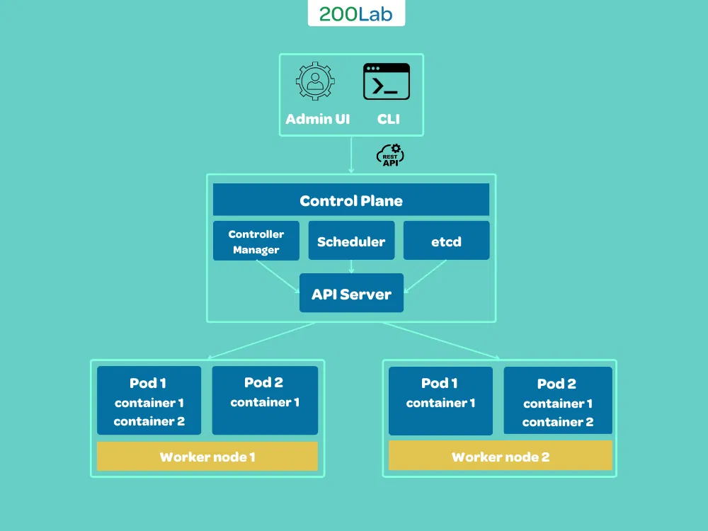

Kubernetes¶
Definition¶
- Kubernetes is an open-source container orchestration platform that automates the deployment, scaling, and management of containerized applications (Designed by Google) - hệ thống điều phối container mã nguồn mở
Ví dụ¶
- Trong một dàn nhạc sẽ có một nhạc trưởng và rất nhiều nhạc công. Nhạc trưởng sẽ có nhiệm vụ chỉ huy dàn nhạc, giúp các nhạc công giữ lửa và truyền cảm xúc cho họ. Tất nhiên các bản nhạc thì được biên soạn, sáng tác bởi các nhà soạn nhạc.
- Tương tự như trên, Kubernetes sẽ là nhạc trưởng, Container hoặc Services sẽ là những nhạc công. Để có thể hoạt động trơn tru cần có file config có đuôi yaml, yml và chúng đóng vai trò là nhà soạn nhạc.
Nên dùng khi nào?¶
- Kubernetes (k8s) được sử dụng khi bạn cần quản lý và triển khai một hệ thống phức tạp với nhiều container hoặc microservices. K8s là một lựa chọn tốt cho các dự án có nhu cầu:
- Scalability: Cho phép tăng/giảm số lượng các container trong hệ thống một cách dễ dàng và linh hoạt.
- Availability: Cung cấp các tính năng như replication, self-healing, rollbacks tự động và horizontal scaling để đảm bảo rằng hệ thống luôn hoạt động mạnh mẽ và không bị gián đoạn.
- Continuous Deployment/Delivery: Cho phép triển khai và cập nhật mã nguồn một cách nhanh chóng và dễ dàng.
- Portability: Giúp deploy và manage ứng dụng một cách nhất quán và đáng tin cậy. Nó hỗ trợ việc chuyển đổi giữa các cloud provider hoặc môi trường on-premise dễ dàng.
Hạn chế¶
- Complexity: Cung cấp nhiều tính năng và tùy chọn, nhưng việc thiết lập và vận hành yêu cầu chuyên môn cao và nguồn lực lớn.
- Resource Requirements: Đòi hỏi nhiều tài nguyên máy chủ, đặc biệt khi quản lý nhiều nodes.
- Networking Challenges: Việc cấu hình và sử dụng các tính năng quản lý mạng của K8s có thể rất phức tạp.
- Cost (chi phí): Chi phí tài nguyên máy chủ và mạng có thể tăng cao, đặc biệt khi sử dụng nhiều nodes hoặc dịch vụ cloud như Amazon EKS, GKE, AKS.
- Security: Cung cấp rất nhiều tính năng bảo mật, nhưng việc cấu hình và sử dụng các tính năng này cũng có thể khiến việc bảo mật trở nên phức tạp.
Kubernetes Architecture¶
K8s Cluster¶
- Là một machine (nodes) được sử dụng để chạy các ứng dụng containerized.
- Gồm 2 thành phần cốt lõi: control plane và worker nodes.
Control Plane¶
- Chịu trách nhiệm quản lý trạng thái của cluster. Trong môi trường sản xuất, control plane thường chạy trên nhiều nodes và trải rộng trên một số vùng trung tâm dữ liệu (data).

-
Control Plane gồm các thành phần chính sau:
-
API Server - Most important:
- Cung cấp API RESTful để quản lý và điều khiển các đối tượng trong K8s (như pod, deployment, service).
- Là thành phần quan trọng nhất trong control plane, giúp update, scale và orchestration lifecycle các ứng dụng.
- etcd: Hệ thống quản lý key-value phân tán lưu trữ trạng thái của cluster, bao gồm cấu hình, trạng thái các đối tượng K8s và tình trạng các node.
- Scheduler: Phân bổ các pod lên các node trong cluster dựa trên tài nguyên, sức chứa và các ràng buộc từ yêu cầu của pod.
- Controller Manager: Quản lý các controller như Replication Controller, Deployments, và StatefulSets, điều chỉnh trạng thái của các đối tượng K8s để đạt mục tiêu đề ra.
- Pod: Đơn vị triển khai nhỏ nhất trong Kubernetes, chứa một hoặc nhiều container chạy trên một node trong cluster, giúp việc quản lý và triển khai container trở nên dễ dàng hơn. Nếu một Pod chết, Kubernetes sẽ tự động tạo lại Pod khác để thay thế.
Worker Nodes¶
- Là các máy chủ chạy các ứng dụng containerized. Mỗi node chứa các pods, được quản lý bởi control plane.
- Mỗi worker node bao gồm các thành phần sau: Kubelet, Container runtime và Kube proxy.
- Kubelet: Daemon chạy trên mỗi worker node, giao tiếp với control plane để nhận hướng dẫn về các pod sẽ chạy trên node và duy trì trạng thái của các pod.
- Container Runtime: Phần mềm chạy trên node để thực thi các container được gửi từ Kubelet. Các ví dụ phổ biến là Docker, CRI-O, và containerd.
- Kube Proxy: Chạy trên mỗi node, có nhiệm vụ chuyển tiếp yêu cầu mạng giữa các Pod và Service trong cluster, hoạt động như một load balancer tự động, chuyển tiếp yêu cầu tới các Pod phù hợp.